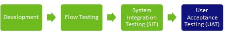

microlearning/intermediate-testing-in-emagiz-user-acceptance-testing
Intro
User Acceptance Testing
In this microlearning, we will focus on user acceptance testing. At some point in time, you have to build your solution and have executed a system integration test. Now it becomes time to include the business (users) with your tests. This is what we call a user acceptance test. The focus of this test is far more functional compared to the system integration test and the goal of the test is to let the business (users) accept the solution. After passing this test you can think about going to Production with the solution.
Should you have any questions, please contact academy@emagiz.com.
- Last update: April 10th, 2021
- Required reading time: 4 minutes
1. Prerequisites
- Basic knowledge of the eMagiz platform
- Understanding of the flow testing functionality
2. Key concepts
This microlearning centers around user acceptance testing.
By user acceptance testing we mean: A test that is designed to let the users (business) test the functionality based on various scenarios. Based on the results of the test you can either go live or need to go back to the drawing board.
At some point in time, you have to build your solution and have executed a system integration test. Now it becomes time to include the business (users) with your tests. This is what we call a user acceptance test. The focus of this test is far more functional compared to the system integration test and the goal of the test is to let the business (users) accept the solution. After passing this test you can think about going to Production with the solution.
Theory
3. User Acceptance Testing
The purpose of performing end-to-end testing is to identify system dependencies and to ensure that the data integrity is maintained between various system components and systems. This means that each change made to integration should be tested to make sure that production-like scenarios don’t lead to any unexpected errors when the new functionality is released to production. During the development of new features, you will need multiple testing methods. Each method has a different purpose to help you in the different steps of the development process. Not in every case, each test is applicable however they are still recommended. Examples include:
- Unit testing
- Offline testing
- Flow testing
- Integration testing
- Regression testing
- Performance testing
- End-to-end testing (UAT)

An important step is to determine as early as possible the different scenarios which you need to test during your end-to-end test. The earlier you have these clear, the better you can test your changes during the process. This will improve the quality of the integration. Before starting the Create phase, the test scenarios should be agreed upon with the business owners. This is one of the Definition of Done items from the Discovery (Capture & Design) phase we advise.
During the development, you have considered what the steps and effects are of the new functionality and change. While implementing, you need to test continuously to verify if the changes made behave as expected. The eMagiz platform offers you features that help you during these tests. While doing development you can use the flow testing functionality in eMagiz to test your small units/flows.
However, at some point, you need to link these units/flows together. That is when you as a developer should want to do a system integration testing to determine for yourselves that everything that you and others within the team have worked to connect two systems works across all those scenarios. This way you know that this solution is ready for (User) Acceptance Testing.
When you have successfully performed your system integration test you should schedule and execute a user acceptance test (UAT). With this test, the users (business) will test what you (and your team) have built to ensure that it works as expected. A crucial part of this test is user involvement and a focus on functional scenarios. In essence, you should not have to look into eMagiz at this point as your solution should do what it is built for. If you notice that you spend a lot of time in eMagiz while this test is executed you should consider testing your solutions better before going into a user acceptance test (UAT).
Practice
4. Assignment
Browse the internet to learn more about User Acceptance Testing. Use the suggested additional readings as a starting point. Furthermore, see if you and your team members already do this or not.
5. Key takeaways
- There are various stages of testing
- User Acceptance Test (UAT) verifies that all intended functional scenarios as devised by the users (business) are indeed working as expected
- You need a User Acceptance Test (UAT) before going live
Solution
6. Suggested Additional Readings
If you are interested in this topic and want more information on it please read the following links:
- https://www.softwaretestinghelp.com/what-is-user-acceptance-testing-uat/
- https://www.guru99.com/user-acceptance-testing.html
7. Silent demonstration video
As this is a more theoretical microlearning we have no video for this